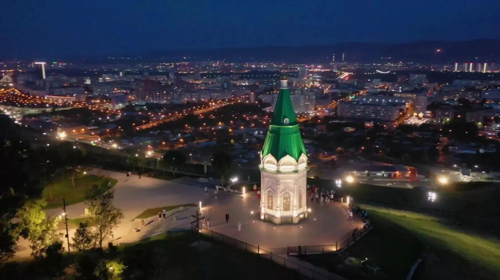
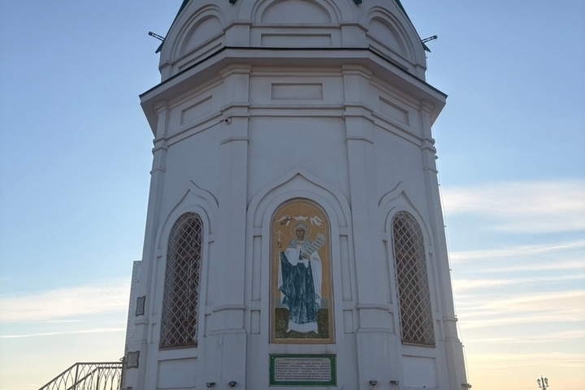
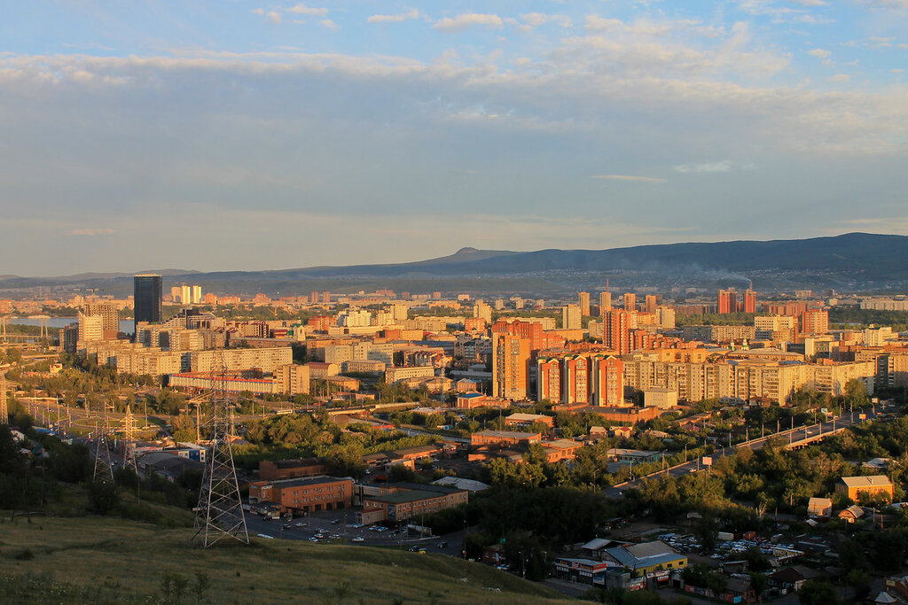
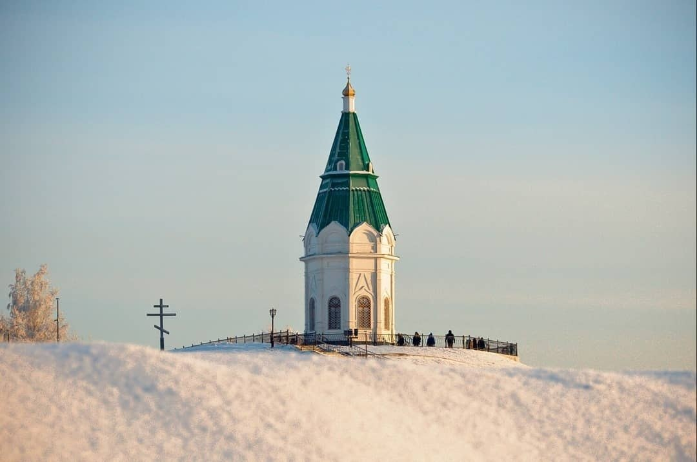
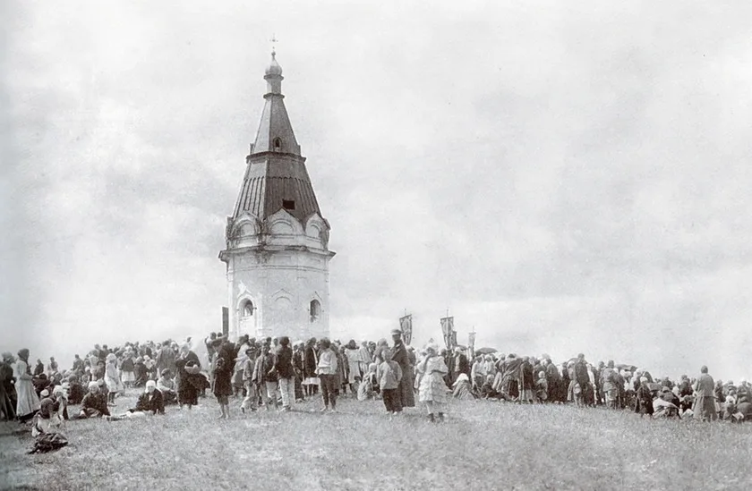
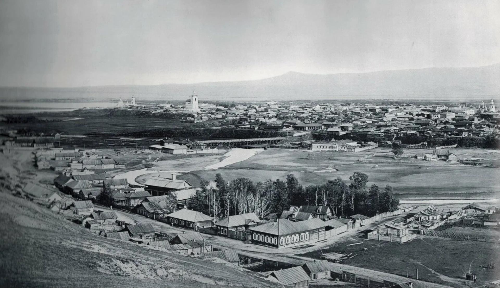

Знакомство с памятником
Часовня над городом
Часовня Параскевы Пятницы находится на Караульной горе в Красноярске. Это православное сооружение, посвящённое святой великомученице Параскеве Пятнице. Положение на возвышенности делает часовню заметной частью городского пейзажа. [1] [2]
История
Часовня на Караульной горе
Каменная часовня была построена в XIX веке. В кратких исторических справках обычно указывают, что здание относится к середине столетия. [1] [2]
Часовня связана с историческим ландшафтом Красноярска: её положение на горе заметно из разных частей города. Благодаря этому она стала не только религиозным сооружением, но и важным городским ориентиром.
В местных рассказах встречаются предания о появлении часовни. Их содержание может различаться, поэтому такие сюжеты важно отделять от сведений, подтверждённых документами.

Пять деталей
Интересные факты
- Необычная форма здания Часовню описывают как восьмигранное сооружение с шатровым завершением. Такая композиция помогает зданию выделяться на фоне городской панорамы. [1] [2]
- Архитектурный проект связывают с Яковом Алфеевым В краеведческих описаниях автором проекта называют архитектора Якова Алфеева. [1] [2]
- В строительстве участвовали местные благотворители В исторических рассказах о часовне упоминается золотопромышленник Пётр Кузнецов как один из благотворителей, связанных со строительством. [1] [2]
- Имя святой связано со значением слова «пятница» Имя Параскева восходит к греческому слову «параскеви» — «пятница». Поэтому посвящение часовни связано и с календарным значением имени. [4]
- Часовня стала частью образа российской банкноты Красноярская часовня связана с оформлением банкноты достоинством 10 рублей образца 1997 года. [3]
Основные этапы
Краткая хронология

Архитектура
Выразительный силуэт на возвышенности
Архитектура часовни сочетает компактный объём здания и заметное завершение кровли. Её силуэт хорошо читается на фоне неба и окружающей застройки. [1]
Восьмигранная форма и шатровое завершение относятся к характерным особенностям здания. Они придают часовне узнаваемый облик, который особенно заметен при взгляде на неё издалека. [1] [2]
Значение для города
Памятник и часть красноярского пейзажа
Часовня занимает заметное место в городском ландшафте Красноярска. Её воспринимают как религиозный памятник, архитектурную достопримечательность и один из ориентиров, связанных с Караульной горой. [1] [2]

Фотографии
Часовня и её детали



Источники
Источники информации
- Красноярский краевой краеведческий музей Музейные и краеведческие материалы по истории Красноярска.
- Официальный портал Красноярского края Региональные материалы об истории и культурном наследии края.
- Банк России Официальные сведения о российских банкнотах и их оформлении.
- Справочно-информационный портал «Грамота.ру» Справочные материалы о русском языке и происхождении слов.